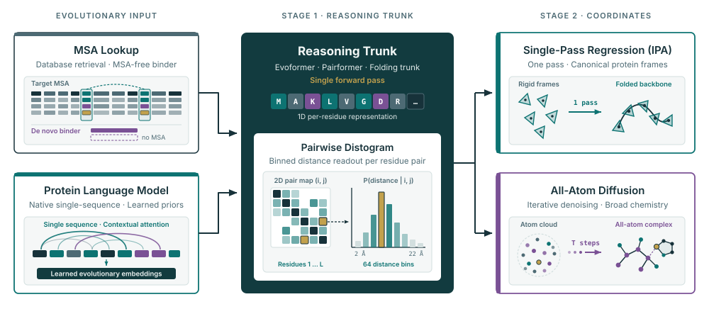
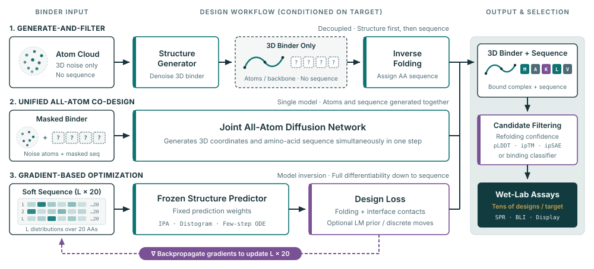

Generative Methods for De Novo Binder Design: Architectural Trade-offs and Experimental Reality
Draft Review Manuscript prepared for PLOS Computational Biology. Authors, affiliations, and required journal statements to be finalized prior to submission.
Abstract
Advances in protein structure prediction and biomolecular co-folding have enabled computational de novo binder design against specific protein targets. Generative models conditioned on target structures now narrow experimental testing from massive empirical libraries to tens of candidates for peptides, minibinders, and antibodies. This review examines how multi-chain structure predictors are turned into binder-design workflows, focusing on two core mechanistic trade-offs: supplying evolutionary information through multiple sequence alignments or protein language models, and generating atomic coordinates through regression, diffusion, or flow matching. We trace how these architectural choices give rise to generate-and-filter pipelines, unified all-atom diffusion models, and gradient-based sequence optimization. We then assess why structural confidence filters remain an imperfect guide to candidate selection and why experimental differences prevent treating published wet-lab hit rates as direct comparisons. Finally, we outline the main technical and translational bottlenecks separating in vitro binding hits from developable drug leads.
Introduction
Artificial intelligence transformed structural biology by bringing protein structure prediction to near-experimental accuracy. AlphaFold2 marked this turning point at CASP14, using coevolutionary signals in multiple sequence alignments (MSAs) to predict single-chain folds to a median Cα root-mean-square deviation (RMSD) of 0.96 Å at 95% residue coverage [1]. AlphaFold3 subsequently extended this framework to complexes containing proteins, nucleic acids, small-molecule ligands, and ions, establishing biomolecular co-folding as a general modeling paradigm [2]. With reliable complex prediction in hand, the field has moved quickly to the inverse challenge: repurposing these neural architectures to generate de novo binders against specific targets.
Moving from complex prediction to binder generation draws on the same core architecture. Supplying the sequences of all interacting chains asks the network to predict the three-dimensional complex, whereas leaving the binder chain masked or initialized as noise asks the same model to generate a complementary partner [3, 4]. What differs sharply in practice is search and validation. Evaluating a structure predictor starts from a given natural sequence whose predicted geometry can be scored purely in silico against a held-out crystal or cryo-electron microscopy structure in the Protein Data Bank (PDB). In de novo design, the sequence itself is unknown and must be discovered from a combinatorial space of 20L possibilities for a chain of length L without evolutionary alignments or a pre-existing experimental reference. Confirming binding therefore requires synthesizing and assaying candidates in a wet laboratory.
Many therapeutically relevant protein targets present broad, flat surfaces that lack the deep pockets required by small-molecule drugs. Engaging these surfaces calls for peptides, compact de novo proteins (minibinders), or antibody formats such as nanobodies (VHHs), single-chain variable fragments (scFvs), and monoclonal antibodies (mAbs). Conventional discovery obtains these binders by screening vast random display libraries or immunizing animals, a process that must be repeated for each new target and offers limited control over the binding site. Generative and filtering pipelines instead propose candidate sequences against a chosen structure, reducing experimental testing from thousands or millions of variants in empirical screens and early computational campaigns [5, 6] to tens of synthesized designs per target [4, 5, 7, 8].
Written from a drug-discovery and protein-engineering perspective, this review examines de novo protein- and peptide-design methods, emphasizing underlying mechanisms and architectural trade-offs rather than ranking models. We first describe how structure-prediction trunks and coordinate-generation modules work, then trace how those components give rise to distinct binder-design workflows, evaluate computational filtering limits alongside wet-lab campaign evidence, and conclude with the translational and technical bottlenecks separating in vitro binding hits from viable drug leads. Small-molecule drug design, which operates on variable chemical graphs governed by valence rules, requires separate architectures and benchmarks, placing it outside the scope of this review.
1. Co-folding Architectures and Mechanistic Trade-offs
The two-stage co-folding pipeline
Modern protein structure prediction rests on the principle that correlated mutations between positions in an MSA reflect spatial proximity in the folded protein [1]. Most contemporary co-folding models build on this principle through a two-stage pipeline (Fig 1). In the first stage, a deep sequence-to-pairwise reasoning trunk transforms sequence and evolutionary inputs into single-residue and pairwise representations. Examples include the Evoformer in AlphaFold2 [1], the simplified Pairformer shared by AlphaFold3, Boltz, Chai-1, Protenix, and RoseTTAFold3 [2, 9–12], and the recurrent folding trunk in ESMFold and ESMFold2 [13, 14]. A linear projection on the pairwise representation predicts a distogram, giving a probability distribution over binned physical distances for every residue pair, typically 2 to 22 Å in 64 bins. For binder design, the entire trunk is differentiable and executes in a single forward pass for a given complex [9], so the distogram can serve both as a training loss and as a smooth surrogate objective during sequence optimization [1, 14, 15]. In the second stage, a dedicated coordinate module converts these learned representations into explicit atomic positions. This two-stage layout contrasts with notable alternative architectures. Early RoseTTAFold propagated parallel one-dimensional sequence, two-dimensional pairwise distance, and three-dimensional coordinate tracks throughout the network, allowing spatial motifs and target geometry to be supplied as input coordinates [16, 17]. ESM3 takes a different route, encoding sequence, structure, and function as discrete tokens within a multimodal masked language model so that any track can be prompted or generated jointly [18].

Evolutionary inputs: multiple sequence alignments versus protein language models
How evolutionary information enters the trunk creates a central mechanistic divide in binder design. Standard MSA-based co-folders, including AlphaFold2, AlphaFold3, RoseTTAFold3, Boltz, and Protenix, retrieve homologous sequences from large databases at inference time [1, 2, 9, 11, 12]. Database retrieval is discrete, non-differentiable, and undefined for a synthetic binder sequence with no natural homologs. Consequently, whenever an MSA-trained model evaluates or optimizes a de novo binder chain, that chain must run in single-sequence mode (without an MSA), even if the target protein carries a deep alignment. Both the AlphaFold2 and AlphaFold3 studies report that shallow-MSA and single-sequence inputs represent their weakest accuracy regime [1, 2].
Replacing database lookups with a protein language model (PLM) embeds evolutionary statistics into network weights learned from billions of natural sequences. ESM-2 and ESMFold established that single-sequence structure prediction without MSAs or templates is feasible, initially trading lower accuracy than AlphaFold2 for substantially faster inference [13]. Recent scaling of this approach has closed much of that gap for complex interfaces. ESMC is a PLM trained on roughly 2.8 billion sequences, whose frozen 6-billion-parameter representations drive ESMFold2 through 48 recurrent pair-state folding layers (24 in ESMFold2-Fast) and a sliding-window atom-attention diffusion transformer [14]. In single-sequence mode, ESMFold2 matches MSA-enabled AlphaFold3 on antibody–antigen structure prediction, a parity confirmed by independent AtlasFold benchmarks [19], while retaining an optional detachable MSA encoder for unusually high-perplexity sequences [14]. For binder design, this architecture provides a clear advantage: because a PLM expects single sequences natively, gradients from the folding trunk and distogram can propagate all the way back through the PLM into the input sequence representation without pushing the designed chain outside its training distribution [14].
Hybrid architectures bridge these two input modes. Chai-1 incorporates both an MSA track and a PLM track that can operate independently or jointly, alongside optional experimental contact or pocket restraints [10]. On antibody–protein interfaces, where natural cross-chain coevolution is weak, single-sequence Chai-1 matches its MSA-enabled mode and outperforms MSA-driven AlphaFold-Multimer v2.3 [10]. Taken together, these results explain why single-sequence PLM trunks are particularly well suited to designed peptides, minibinders, and antibody loops whose sequences lack paired evolutionary alignments.
Coordinate-generation strategies and physical stereochemistry
The second major architectural choice governs how trunk representations become atomic coordinates, trading off inference speed, chemical generality, and end-to-end differentiability. Single-pass coordinate regression, introduced in AlphaFold2's Invariant Point Attention (IPA) structure module and adopted in ESMFold, updates rigid residue frames in one forward pass [1, 13]. Because coordinates are regressed through a shallow, deterministic module rather than over hundreds of iterative steps, gradients from three-dimensional geometric and confidence losses propagate cleanly back to the input sequence [1, 20]. However, frame-based IPA modules are tailored to canonical amino-acid backbones and do not naturally generalize to arbitrary non-protein atoms or unusual covalent chemistries.
To unify proteins, nucleic acids, small molecules, ions, and modified or cyclized peptides within one coordinate head, AlphaFold3 replaced IPA with an iterative all-atom diffusion module that transforms Gaussian noise into atomic coordinates along a stochastic differential equation trajectory [2]. Subsequent all-atom co-folders, including Boltz, Chai-1, Protenix, RoseTTAFold3, and ESMFold2, adopted variants of this diffusion formalism [9–12, 14]. Unlike single-pass regression, stochastic diffusion samples a distribution of plausible structures instead of outputting one deterministic pose. In practice, co-folders run multiple model seeds and draw a batch of diffusion samples per trunk pass before using an internal confidence head to select a top-ranked prediction, for example five seeds with five samples each in standard AlphaFold3 inference [2]. These gains in chemical generality come at two practical costs for binder design. First, iterative denoising is slow, often requiring hundreds to roughly 1,000 forward passes per generated structure [21]. Second, unrolling those denoising steps to compute sequence gradients is computationally impractical, breaking the simple end-to-end backpropagation path available in IPA regression models [15].
Flow matching addresses the sampling bottleneck by formulating coordinate generation as an ordinary differential equation (ODE) with straighter transport trajectories requiring far fewer integration steps. On unconditional protein monomers, FrameFlow recast frame diffusion as flow matching and reported twofold higher designability at five times fewer timesteps [21]. Target-conditioned flow models, including PPIFlow, OriginFlow, and D-Flow, extend these faster trajectories to protein–protein interfaces [22–24]. Beyond faster sampling, few-step ODE decoders can restore end-to-end differentiability through all-atom coordinates [25].
Predicting free three-dimensional coordinates in all-atom diffusion models also introduces physical-validity errors that rigid amino-acid frames largely avoided. Because bond geometry and handedness are learned from data rather than fixed by residue templates, AlphaFold3 reported occasional steric clashes and a 4.4% chirality violation rate on the PoseBusters physical-plausibility benchmark [26] for protein–ligand complexes, despite penalizing such violations when ranking its sampled structures [2]. Two strategies address this limitation. Boltz-1x applies explicit steering potentials during denoising to suppress clashes and inverted stereocenters [9]. RoseTTAFold3 instead encodes stereochemistry during training to avoid perturbing inference trajectories, achieving 1.74 Å mean backbone RMSD on mixed L/D peptides compared with 1.88 Å for AlphaFold3 and 2.24 Å for Boltz-1x [12].
2. Design Workflows: Turning Predictors into Binder Generators
Structure predictors evaluate one candidate at a time, making blind exploration of sequence space impractical. Binder-design systems therefore repurpose these networks through three primary workflows (Fig 2). The first generates a three-dimensional binder geometry against the target, assigns a compatible sequence with a separate inverse-folding model, and refolds the complex to filter candidates. The second trains a single all-atom diffusion network to generate atomic coordinates and amino-acid identities simultaneously, eliminating the inverse-folding handoff before refolding-based filtering. The third keeps a trained structure predictor fixed and optimizes the binder sequence by gradient descent until the network produces a high-confidence complex. Table 1 summarizes representative open and commercial systems from these three families, comparing their trunk inputs, coordinate formalisms, supported modalities, and methodological openness.
Table 1. Representative Co-folding and Binder-Design Systems.
| System | Input trunk | Coordinate formalism | Design workflow | Modalities | Openness |
|---|---|---|---|---|---|
| RFdiffusion + ProteinMPNN [3, 27] | MSA (RoseTTAFold fine-tuned) | SE(3) frame diffusion | Generate-and-filter (backbone diffusion, inverse folding, AF2 filter) | Minibinders, protein scaffolds | Open code and weights |
| RFdiffusion3 + LigandMPNN [28, 29] | Pre-trained 2-layer Pairformer (no RF predictor init) | All-atom U-Net diffusion (100 steps) | Generate-and-filter (all-atom diffusion, inverse folding; AlphaDesign [30] alternative) | Minibinders, enzymes, ligand binders | Published architecture |
| RFantibody [6] | MSA (RoseTTAFold fine-tuned) | SE(3) frame diffusion | Generate-and-filter (epitope-conditioned CDR diffusion, ProteinMPNN) | VHHs, scFvs, mAbs | Published architecture |
| RFpeptides [7] | MSA (RFdiffusion with cyclic positional offset) | SE(3) frame diffusion | Generate-and-filter (cyclic diffusion, ProteinMPNN, AfCycDesign filter) | Macrocyclic peptides | Published architecture |
| PPIFlow [22] | Structure-conditioned flow network | ODE flow matching | Generate-and-filter (flow-matching generation, inverse folding) | Protein–protein binders | Published architecture |
| PXDesign-d / PXDesign-h [25] | MSA (Protenix Pairformer) | DiT Cartesian diffusion (d) / 2-step ODE (h) | Generate-and-filter (d) or end-to-end backpropagation (h) | Minibinders | Open Protenix platform |
| Protenix-v2 [8] | MSA (Pairformer) | All-atom diffusion | Generate-and-filter (diffusion generation, confidence ranking) | Minibinders, VHHs, Fv, mAbs | Open Protenix platform |
| BoltzGen [4] | MSA (Pairformer) | All-atom diffusion | Unified joint prediction and design with Boltz-2 refolding filter | Minibinders, peptides, VHHs (excludes full mAbs) | Open weights, training code, and data (MIT) |
| BoltzProt-1 [31] | MSA (Pairformer) | All-atom diffusion | Refined BoltzGen generator ranked by BoltzPPI binding classifier | VHHs, protein binders | Commercial API only (weights closed) |
| BindCraft / AfCycDesign [20, 32] | MSA trunk (AF2 / AF2-Multimer, single-seq binder) | Single-pass IPA regression | Full-network backpropagation (BindCraft adds ProteinMPNN surface redesign; AfCycDesign adds cyclic offset) | Minibinders (BindCraft); macrocycles (AfCycDesign) | Open code (ColabDesign / AF2 weights) |
| BoltzDesign1 / RFOptimization [15, 33] | MSA (Boltz-1 or RF3 Pairformer) | Diffusion bypassed (distogram and confidence gradients) | Continuous sequence relaxation (BoltzDesign1) or discrete mutation search (RFOptimization) | Minibinders, cyclic peptides, ligand binders | Open code on MIT/BSD predictor weights |
| Germinal / mBER [34, 35] | MSA trunk (AF2-Multimer) + IgLM or ESM-2 prior | Single-pass IPA regression | Backpropagation regularized by live IgLM (Germinal) or static ESM-2 (mBER) priors | scFvs and VHHs (Germinal); VHHs (OpenGerminal [36]; mBER) | Open code (OpenGerminal Apache-2.0) |
| ESMC / ESMFold2 [14] | PLM trunk (6B ESMC, optional MSA) | Sliding-window atom-attention diffusion | Native single-sequence backpropagation through PLM and folding trunk distogram | Minibinders, scFvs | Biohub / EvolutionaryScale release |
| AlphaProteo / Chai-2 / Latent-X1 & X2 [5, 37–39] | Undisclosed (Chai-2 folding module resembles hybrid Chai-1) | Undisclosed generative architectures | Published wet-lab campaigns with confidence and self-consistency filtering | Minibinders, macrocycles, VHHs, scFvs | Undisclosed generative architectures |
Structure generation with inverse folding
The most widely adopted binder-design pipeline decouples geometry generation from sequence assignment, operating without backpropagation during design. RFdiffusion popularized this generate-and-filter workflow by fine-tuning RoseTTAFold predictor weights to denoise three-dimensional residue frames against a fixed target protein, relying on RoseTTAFold's coordinate track to condition on its structure [3]. Because the model outputs only a sequence-free backbone, an inverse-folding network such as ProteinMPNN next assigns compatible amino-acid sequences to the generated geometry [27]. Candidates are then refolded in complex with the target using AlphaFold-Multimer or chain-break-adapted AlphaFold2 and triaged on confidence and self-consistency thresholds [3]. AlphaProteo illustrates typical cutoffs by requiring an interchain predicted aligned error (iPAE) below 10 Å, a binder-aligned RMSD below 1 Å, and a per-residue confidence (pLDDT) above 80 [37]. Clearing these computational filters does not guarantee wet-lab success. As the ProteinMPNN authors noted, high native sequence recovery on offline fixed-backbone benchmarks does not necessarily predict whether a designed sequence will fold accurately [27]. Likewise, the in silico success rates frequently quoted for backbone generators measure self-consistency with a refolding predictor, not experimental target engagement [3].
Targeted architectural modifications extend this decoupled workflow to new modalities and scales. RFdiffusion3 moved away from fine-tuning a RoseTTAFold predictor altogether, instead pre-training a compact 168-million-parameter all-atom transformer U-Net modeled on AlphaFold3's diffusion module using PDB structures and AlphaFold2-predicted models [28]. By trimming its Pairformer trunk from 48 to 2 layers and sampling in 100 steps, RFdiffusion3 runs roughly an order of magnitude faster than earlier releases and pairs with LigandMPNN in place of ProteinMPNN whenever non-protein atoms such as ligands, nucleic acids, or metal ions are present [28, 29]. For specialized topologies like head-to-tail macrocycles, RFpeptides adds a cyclic relative positional encoding to RFdiffusion and RoseTTAFold2 [7]. After inverse folding and filtering with cyclic AlphaFold2 (AfCycDesign) [32], RFpeptides yielded binders against all four targets from fewer than 20 synthesized peptides per target, supported by experimental crystal structures [7]. Related variants in Table 1 explore alternative inverse-folding architectures in AlphaDesign [30], adapt backbone generation for antibody loops in RFantibody [6], replace frame representations with Cartesian diffusion transformers in PXDesign-d [25], or adopt ODE flow matching for backbone generation in PPIFlow [22].
Unified prediction-and-design all-atom models
A second workflow eliminates the handoff between geometry generators and inverse-folding models by training a single all-atom diffusion network jointly for structure prediction and de novo sequence–structure generation. BoltzGen exemplifies this unified approach under a fully reproducible MIT release providing model weights, training code, and datasets [4]. Conditioned on a target, BoltzGen simultaneously generates atomic coordinates and amino-acid identities for masked binder chains, covering peptides, minibinders, and nanobodies, though full-antibody design was not demonstrated [4]. It matches the structure-prediction accuracy of Boltz-2 on the same benchmark test set, yet its design pipeline relies on Boltz-2 to refold and filter generated candidates [4]. Commercial systems such as Chai-2 and Latent-X may use related co-design strategies internally, but their generative architectures remain undisclosed [5, 38, 39]. BoltzGen therefore stands as the clearest open representative of this class, while its successor BoltzProt-1 is offered through a commercial API [31].
Joint all-atom training also exposes how generative diffusion models memorize biases in the Protein Data Bank. The BoltzGen authors documented that at designed binder lengths between 73 and 76 residues, structural diversity collapses as the model overwhelmingly samples ubiquitin, an artifact traced to more than 900 ubiquitin entries in the PDB [4]. More broadly, the authors caution that even unified all-atom design is neither "zero-shot" nor "plug-and-play" in practice, recommending manual inspection and iterative reruns over unexamined automated selection [4].
Gradient-based sequence optimization
The third workflow turns a frozen structure predictor into a generator via gradient descent, often termed hallucination or model inversion. Because discrete residue identities cannot be differentiated, the binder sequence is relaxed into a continuous probability distribution over the 20 amino acids at each of L positions, represented as an L × 20 weight matrix. At each optimization step, this soft sequence is passed alongside the target through the differentiable predictor to compute a design loss favoring confident folding and tight interchain contacts. Gradients of that loss flow backward through the network to update the sequence weights, nudging each position toward amino acids that improve the predicted complex. To obtain a discrete sequence, a temperature-annealing schedule gradually sharpens these distributions over iterations until each position commits to a one-hot residue, a strategy popularized by ColabDesign [40].
When the predictor uses a single-pass IPA regression module, gradients propagate cleanly from predicted three-dimensional coordinates and confidence heads back to the input sequence [1]. BindCraft exploits this full-network differentiability in AlphaFold-Multimer, cycling randomly among its five independently trained models between iterations to curb overfitting [20]. It sharpens the binder sequence over four stages, annealing continuous amino-acid weights into discrete residues with a straight-through step that sends one-hot sequences forward and continuous gradients backward, before a final mutation-refinement step [20]. A ProteinMPNN variant then redesigns non-interface residues to improve stability and solubility [20]. A notable mechanistic feature of BindCraft is that it repredicts the target structure at every optimization step, permitting induced-fit rearrangements ranging from 0.5 to 5.5 Å Cα RMSD [20]. For cyclic peptides, AfCycDesign applies a cyclic relative positional offset to AlphaFold2's peptide chain while keeping the target linear, yielding eight monomer crystal structures within 1.0 Å of design, though its MDM2 and Keap1 binders relied on motif grafting rather than de novo hallucination [32]. However, both BindCraft and AfCycDesign rely on MSA-trained AlphaFold2 models for invented binder chains that lack evolutionary alignments, forcing optimization into the predictor's weakest, MSA-free regime [1, 20, 32].
Adapting gradient optimization to diffusion-based co-folders requires circumventing the cost of differentiating through hundreds of denoising steps [15]. Two solutions have proved effective. The first computes gradients exclusively from the differentiable trunk's distogram and confidence heads while placing a stop-gradient on the diffusion module to block backpropagation through iterative denoising. BoltzDesign1 applies this strategy to Boltz-1's 64-bin Pairformer distogram, optimizing the pairwise distance distribution from which diffusion samples; on 212 BindCraft binders, Pairformer contacts recovered reference interface contacts on 76% of designs [15]. ESMFold2 applies the same distogram-gradient strategy through its native single-sequence PLM trunk, invoking the diffusion and confidence modules only at the end to score interface predicted TM-score (ipTM) [14]. The second solution preserves coordinate-level backpropagation by replacing iterative diffusion with a few-step deterministic decoder. Built on the open AlphaFold3-style predictor Protenix, PXDesign-h substitutes a differentiable two-step ODE sampler for its 200-step diffusion module and optimizes against five ensemble models resampled at each step [25].
Optimizing a sequence solely for high predicted confidence can produce unnatural amino-acid compositions that exploit a single predictor's blind spots rather than genuinely folding and binding. To prevent such adversarial designs, recent gradient methods add language-model priors or restrict search to discrete mutations. Native PLM trunks such as ESMC guide designed sequences toward natural protein statistics during backpropagation [14]. For MSA-based predictors, external language models can provide a similar guardrail: Germinal combines live gradients from an antibody language model (IgLM) and AlphaFold-Multimer [34], whereas mBER incorporates fixed sequence preferences from ESM-2 [35]. Taking a complementary route, RFOptimization avoids continuous sequence relaxation altogether [33]. It keeps sequences strictly discrete, using RoseTTAFold3 gradients only to propose single-point mutations that are accepted or rejected iteratively. To curb predictor-specific overfitting, it interleaves Boltz refolding with LigandMPNN resampling while holding out AlphaFold3 as an independent check [33].

3. Candidate Selection and Experimental Evidence
Candidate selection and filtering limits
Evaluating a structure predictor against an experimentally solved reference uses external accuracy metrics, such as DockQ interface scores [41] and atomic RMSD [42]. As de novo binders lack an experimental structure, every design workflow relies on internal self-consistency checks and model-estimated confidence scores to select the small subset of candidates ordered for wet-lab testing. Standard filters combine self-consistency RMSD between generated and refolded coordinates with pLDDT [1], ipTM, and iPAE [43]. Recent pipelines increasingly adopt ipSAE, which restricts ipTM to interchain residue pairs below a fixed PAE threshold so that disordered tails or arbitrary chain trimming do not dilute interface scores [44]. Yet structure-prediction confidence heads are trained on solved bound complexes to estimate coordinate error, not to distinguish binders from nonbinders or predict affinity. High structural confidence therefore does not guarantee wet-lab binding on unseen designs. Three lines of evidence show why these scores fall short for candidate selection.
As described in Section 1, co-folding predictors sample a pool of candidate structures for each input and rely on internal confidence scores to pick a top prediction, but even on known complexes those heads routinely fail to rank the most accurate pose first. Evaluating seven predictors on FoldBench, a benchmark of experimentally solved complexes [45], AtlasFold compared each model's top-ranked prediction against the best structure generated in the same run and found a consistent selection gap [19]. Specifically, confidence ranking missed an acceptable pose (DockQ > 0.23) already present among the generated samples on 11 to 21% of antibody–antigen complexes (4.5% for Boltz-1) and 3 to 8% of general protein–protein interfaces [19]. The FoldBench study itself documented a closely related failure mode for antibodies: a predictor can model the key CDR-H3 binding loop accurately while docking the antibody at the wrong site, and per-sample confidence scores do not reliably distinguish near-native poses from misdocked decoys [45].
Although confidence filters raise hit rates in large candidate pools [35], their accuracy in predicting wet-lab binding fluctuates sharply between targets. Overath et al. illustrated this variability by re-scoring 3,766 experimentally tested designs against 15 targets from six published campaigns through a uniform pipeline [46]. AlphaFold3 ipSAE emerged as the strongest overall predictor of binding, with its average precision spanning 0.1 to 1.0 depending on the target, partly reflecting heterogeneous source assays and older design models in the pooled dataset [46]. In the Germinal antibody campaign, many nonbinders cleared the same ipSAE threshold as validated binders [34]. Evaluating refolding filters on a shared experimental benchmark, PXDesign found that Protenix and AlphaFold2 selected largely different subsets of true binders and that no single cutoff maximized accuracy on all targets simultaneously [25].
Replacing structure-prediction confidence with dedicated protein–protein binding classifiers can also substantially improve hit rates on identical candidate pools. In a controlled comparison on 10 low-homology targets, BoltzProt-1 kept the BoltzGen generator and a fixed budget of 15 designs per target, swapping BoltzGen's confidence scores for BoltzPPI, a binding classifier trained on solved complex structures and synthetic negatives [31]. This change alone more than doubled confirmed binders from 3.3% (5/150) to 8.0% (12/150), expanding confirmed hits from 2 to 3 of the 10 targets [31]. Candidate ranking therefore shapes experimental yield independently of the generative architecture.
Reading wet-lab campaigns critically
Recent experimental campaigns spanning compact minibinders, nanobodies, antibodies, and cyclic peptides have shown that computational de novo design can routinely produce nanomolar and occasionally picomolar binders from modest synthesis budgets. Table 2 compiles representative studies grouped by modality alongside their target scope, number of designs tested, binding criteria, and key caveats. Because no two de novo campaigns share a common target panel, assay format, or positivity threshold, headline hit rates should be read as context-dependent demonstrations rather than head-to-head rankings.
Table 2. Representative Wet-Lab De Novo Binder Campaigns and Assay Context.
| System | Target scope and selection | Designs tested per target | Assay and hit criterion | Key caveats |
|---|---|---|---|---|
| Minibinders | ||||
| RFdiffusion [3] | 5 author-selected targets | 95/target (475 pooled) | Single-point BLI at 10 µM ≥ 50% positive control; 19% pooled, best 28 nM (influenza HA) | Single assay; AlphaProteo yeast-display re-test recovered lower rates at 10–20× lower target concentration [37] |
| AlphaProteo [37] | 8 author-selected targets | 54–172/target | Yeast-display flow cytometry > 0.2 (1.3 for IL-17A); 9–88% on 7 targets, 0/54 TNFα, best 82 pM (IL-7Rα) | Undisclosed generative architecture; single display format for hit calls |
| BindCraft [20] | 12 author-selected targets | 6–53/target | SPR binding observed (no numeric cutoff); 10–100% (mean 46.3%), best < 1 nM (PD-1), 5 nM (CbAgo) | PD-1 sub-nM hit measured as bivalent Fc fusion (avidity); single assay format |
| PXDesign (PXDesign-d) [25] | 6 author-selected targets | 10–17/target | BLI > 0.06 nm at 1 µM then KD < 1,000 nM; 20–73% on 5 targets, 0/16 TNFα | Expression attrition shifts rates (PD-L1: 72.7% tested vs. 47.1% sent); wet-lab tested diffusion mode only |
| ESMFold2 campaign [14] | 5 author-selected targets (minibinders and scFvs) | 84/cohort | BLI stringent (0.25–0.4 nm) and inclusive (> 0.1 nm); mean 70.0% minibinders (best 68 pM), 21.0% scFvs | Author-selected targets; best-hit target not stated in text |
| Nanobodies and antibodies | ||||
| RFantibody [6] | 4 targets (yeast display); 3 targets (SPR) | 9,000/target (display); 95/target (SPR) | Yeast display or single-concentration SPR; 0–2% confirmed hit rate, best 78 nM (HA), 1.4 µM (RSV site III) | Authors note library screening remains necessary given current success rates |
| BoltzGen / BoltzProt-1 [4, 31] | 9 novel targets (<30% PDB identity, BoltzGen); 10 low-homology targets (BoltzProt-1) | 15/target | BoltzGen: sensorgram or ≥ 300% control (6/9 targets, best 6.1 nM VHH); BoltzProt-1: flipped orientation + vendor confirmation (8.0% vs. 3.3% BoltzGen) | BoltzProt-1 separates orthogonal confirmation from screening hits and is API-only (weights closed) |
| Chai-2 [5] | 52 novel targets (scFv/VHH); 5 targets (minibinders) | ≤ 20/target/format (Ab); 20–25 (minibinders) | BLI > 0.1 nm and > 300% background; 16% combined Ab (26/52 targets), 68% minibinders (best 18.3 pM) | Undisclosed generative architecture; avidity flagged on EFNA5 scFv and 4/10 minibinder affinities |
| Protenix-v2 [8] | Novelty-filtered soluble panel + 4 GPCRs | 16–30/target (GPCRs); figure-only (soluble) | BLI > background + 0.05 nm; binders on all soluble targets (2–48%), GPCR VHH-Fc 16–88%, mAb 0–50% | Manually chosen in-stock targets and epitopes; bivalent VHH-Fc avidity (including 112 pM GPRC5D) |
| Germinal / mBER [34, 35] | 4 VHH + 2 scFv targets (Germinal); 145 of 436 targets, random hotspots (mBER) | 43–101 ordered (Germinal); 1,153,241 pooled (mBER) | Germinal: split-luciferase + BLI (or SPR + BLI for Fab, best 170 nM VHH); mBER: phage enrichment (median ~0.4%, up to 38% ipTM-filtered) | Germinal VHH rates use BLI sub-denominators; mBER reports phage enrichment without affinity quantification |
| Macrocyclic peptides | ||||
| RFpeptides [7] | 4 author-selected targets | 6–14 tested (of 11–27 selected) | SPR single-cycle kinetics at 100 µM (no numeric cutoff); 2–4 hits/target, best 6 nM (GABARAP), crystal structures | Synthesis attrition (14/27 MCL-1, 11/26 RbtA tested); single assay format |
| Latent-X1 / Latent-X2 (macrocycles) [38, 39] | 3 targets, 2 RFpeptides-matched (X1); 2 targets (X2) | 11–17 of 30 submitted (X1); 10/target (X2) | SPR measurable signal (X1: 91–100%, best 5.35 µM); BLI > 0.1 nm and kinetics (X2: 9/10 PHD2, 8/10 K-Ras G12D, best 1.54 nM) | Undisclosed architecture; synthesis attrition in X1; single assay format |
Three experimental factors explain much of the apparent spread in published hit rates and affinities. Hit definitions and assay rigor vary widely: some studies call binders from a permissive primary screen alone, such as a qualitative surface plasmon resonance (SPR) signal without a numeric cutoff [7, 20, 38] or a small single-point biolayer interferometry (BLI) shift of 0.05 to 0.1 nm above background [5, 8, 25]. Other campaigns add orthogonal confirmation in a second, independent assay, which reduces the final validated hit count relative to single-screen calls. For example, BoltzProt-1 separates initial screening hits from validated binders confirmed by reversing sensor orientation and external vendor re-testing [31], and Germinal similarly verified antigen-binding fragment (Fab) hits with both SPR and BLI [34]. Multivalent avidity also overstates apparent affinities when binders are tested as dimeric Fc fusions or under dense sensor-immobilization setups that allow simultaneous multi-site engagement, a caveat flagged on reported picomolar and sub-nanomolar hits in Protenix-v2, BindCraft, and Chai-2 [5, 8, 20]. Finally, excluding constructs that fail chemical synthesis or protein expression shrinks the hit-rate denominator and inflates reported success rates. In practice, cyclic-peptide campaigns such as RFpeptides and Latent-X1 often assayed only about half of the sequences selected for synthesis [7, 38], and PXDesign showed on PD-L1 that omitting six poorly expressing designs raised its hit rate from 47.1% of ordered constructs to 72.7% of those tested [25].
Target and epitope selection biases are equally consequential. Most published campaigns test a handful of targets and epitopes selected by the authors, yet binding difficulty varies sharply between sites on a single protein: two epitopes on the same antigen (AMBP) in Protenix-v2 produced 4% and 48% hit rates [8]. The scale of this selection effect was quantified by mBER, which designed more than 1.15 million unique VHHs against 436 human cell-surface proteins (145 assayed by phage display without affinity measurement), aiming at randomly sampled exposed hotspots [35]. On uncurated hotspots, mBER's median per-design hit rate was roughly 0.4%, two orders of magnitude below curated small-panel reports, while its best individual sites reached 7.5% overall and 38% (8/21) within an ipTM-filtered bin [35].
Even when identical molecules are re-tested in different laboratories, assay conditions shift measured performance. In one example, AlphaProteo resynthesized RFdiffusion's full published panels (including nonbinders) for yeast display at 10- to 20-fold lower target concentrations, and hit rates fell from 33% to 16% on IL-7Rα and from 6% to 0% on TrkA [3, 37]. Similarly, when Latent-X1 resynthesized RFpeptides' two best macrocycles and re-tested them in its own SPR assay, the same peptides measured 4.4- to 5-fold weaker than originally reported, shifting from 1.90 to 8.38 µM on MDM2 and from 2.0 to 10.0 µM on MCL-1 [7, 38]. Alongside these experimental confounders, several commercial systems keep their architectures, weights, and selection pipelines undisclosed, placing their wet-lab claims outside independent verification [47]. These include AlphaProteo, Chai-2, Latent-X1 and Latent-X2, and API-only BoltzProt-1 [5, 31, 37–39], as well as unpublished models such as IsoDDE, which is known from third-party scaling plots alone [48].
4. From In Vitro Binding Hits to Drug Leads
The translational gap
Nearly every de novo binder-design study frames its work around therapeutic discovery, whether accelerating drug development, engineering species cross-reactivity, or blocking clinically relevant interactions [4, 5, 20, 35, 39]. Reviewing a decade of artificial intelligence in pharmaceutical research, Bender et al. draw a useful distinction between model validation and process validation [47]. Model validation measures performance on an isolated task, such as accurately predicting complex structures or identifying nanomolar in vitro hits, whereas process validation asks the harder translational question of whether those outputs improve downstream drug-discovery decisions and reduce clinical failure [47]. Public databases already contain more than 106 bioactive small molecules compared with roughly 103 marketed drugs, a reminder that confirming target binding in a biophysical assay is only the first step toward a viable peptide or protein therapeutic [47].
Clinical viability simultaneously demands high expression, solubility, thermal stability, low self-association, minimal immunogenicity, suitable pharmacokinetics, and the intended functional modulation beyond passive binding [39, 47]. The blinded AIntibody challenge offered a concrete illustration of this trade-off: on its out-of-library engineering task, 30.4% of computational designs did not bind, and the highest-affinity binder in the competition (2.9 pM) failed to elute from a hydrophobic interaction chromatography (HIC) column, indicating poor developability [49]. Despite these requirements, nearly all open generative frameworks optimize and filter exclusively for predicted binding geometry, leaving developability and immunogenicity to downstream screening. Early results from closed platforms suggest that joint optimization of binding and drug-like properties is achievable. For example, Latent-X2 reports de novo macrocycles and antibodies whose developability and low-immunogenicity profiles match or exceed approved therapeutics, including binders on 9 of 18 antibody targets down to 26.2 pM [39]. Yet because its architecture is withheld, independent researchers cannot examine how those competing objectives are balanced [39].
Quantitative protein–protein affinity prediction
Once a campaign identifies an initial binder, optimizing its potency lacks reliable computational guidance because quantitative affinity (KD) prediction for protein–protein complexes remains unsolved. Current co-folding confidence scores behave mainly as binary indicators of whether a complex forms rather than calibrated free-energy estimators, so they cannot distinguish weak micromolar hits from nanomolar leads or guide affinity-maturing mutations. BindCraft notes that AlphaFold2 ipTM separates binders from nonbinders without predicting how tightly they bind [20]. The same bottleneck appeared among computational methods in the blinded AIntibody challenge, where only 1 of 26 participating groups outperformed random selection when ranking closely related antibody clones sharing the same CDR-H3 loop by binding strength [49]. Dedicated affinity-prediction modules added onto co-folding models, such as Boltz-2's affinity head, have so far succeeded on small-molecule free-energy benchmarks, but they are trained exclusively on single-protein ligand assays and do not apply to multimeric protein–protein interactions [50]. Consequently, potency ranking and affinity maturation continue to depend on experimental kinetics after design.
Targets without experimental structures and conformational dynamics
Current design workflows depend heavily on static, experimentally solved target structures and struggle with flexible, uncharacterized, or intrinsically disordered proteins. Nearly all successful wet-lab campaigns so far have started from an experimental crystal or cryo-electron microscopy structure of the target protein, or from a well-folded predicted domain [3, 7, 20, 38]. When no experimental structure is available, how reliably binder design works from predicted target coordinates is largely untested, a caveat Germinal raised after designing against AlphaFold3 models [34]. Flexible loops and intrinsically disordered regions pose a deeper challenge because they lack a single fixed conformation in solution, whereas PDB-trained co-folders produce static snapshots and can hallucinate artificial secondary structure in unstructured stretches unless mitigated during training [2]. Recent campaigns have begun targeting flexible extracellular loops on G protein-coupled receptors (GPCRs) [8] and disordered regions of proteins such as NPM1. On NPM1, BoltzGen observed live-cell nucleolar co-localization for 1 of 5 designed peptides, which does not confirm direct binding to the disordered region [4]. Overall, reliable design against dynamic or structurally uncharacterized proteins remains an open problem.
Blinded prospective benchmarks for de novo design
Beyond these technical challenges, the field still lacks a standardized, blinded prospective wet-lab benchmark for target-conditioned de novo binder design. Structure prediction matured rapidly around shared blind assessments such as CASP and unified benchmark suites like FoldBench [45], where models are scored under common protocols on held-out experimental structures. De novo binder evaluation is harder to standardize because every proposed sequence must be synthesized, expressed, and assayed physically, leaving the field dependent on disconnected, self-selected campaigns. Independent replication of entire campaigns is rare, with AlphaProteo's re-testing of RFdiffusion's full panels as a notable exception [3, 37], and retrospective meta-analyses such as Overath et al. standardize computational scoring without removing assay heterogeneity among source studies [46]. The blinded AIntibody challenge proved that unified wet-lab benchmarking involving 29 organizations is feasible, combining uniform affinity kinetics with a five-assay developability panel [49]. However, that benchmark was narrow in scope, testing library-conditioned antibody optimization against the well-characterized SARS-CoV-2 receptor-binding domain rather than target-conditioned de novo design spanning diverse modalities [49]. Extending multi-group blinded prospective evaluation to novel targets and uncurated epitopes for peptides, minibinders, and antibodies, with full reporting of ordered constructs, independent binding confirmation, and developability profiling, will be essential for fair head-to-head comparison of design methods.
Conclusions
Within a few years, protein structure prediction and biomolecular co-folding have matured into reliable tools for modeling macromolecular complexes. Design pipelines built on these predictors have begun shifting binder discovery away from massive empirical library screening toward targeted computational generation. On well-characterized targets, such workflows can already deliver nanomolar binders in peptide, minibinder, and antibody formats from only tens of synthesized candidates. This progress does not rest on a single strategy: tracing current systems from their underlying components reveals distinct architectural approaches to exploring sequence space, each striking a different balance between differentiability, sampling speed, and all-atom chemical generality.
Generating plausible binders is no longer the limiting step; the primary bottleneck is identifying which candidates to test experimentally. Most pipelines still filter designs using structural confidence scores from co-folding models trained to minimize three-dimensional coordinate error on bound complexes, not to distinguish binders from nonbinders. Those metrics vary widely in predictive accuracy between targets and can be outperformed by dedicated binding classifiers trained on known complexes. Published campaigns also resist direct comparison, as differences in assay rigor, multivalent avidity, construct attrition, and target curation strongly shape reported hit rates. Beyond initial hit discovery, quantitative protein–protein affinity prediction and design against flexible or structurally uncharacterized targets are unresolved modeling challenges. Translating in vitro binding hits into developable, functionally active drug leads will depend on overcoming these limitations and evaluating progress through transparent methods and shared, blinded prospective benchmarks.
References
- Jumper J, Evans R, Pritzel A, Green T, Figurnov M, Ronneberger O, et al. Highly accurate protein structure prediction with AlphaFold. Nature. 2021;596:583–589. doi:10.1038/s41586-021-03819-2
- Abramson J, Adler J, Dunger J, Evans R, Green T, Pritzel A, et al. Accurate structure prediction of biomolecular interactions with AlphaFold 3. Nature. 2024;630:493–500. doi:10.1038/s41586-024-07487-w
- Watson JL, Juergens D, Bennett NR, Trippe BL, Yim J, Eisenach HE, et al. De novo design of protein structure and function with RFdiffusion. Nature. 2023;620:1089–1100. doi:10.1038/s41586-023-06415-8
- Stark H, Faltings F, Choi M, Xie Y, Hur E, O'Donnell T, et al. BoltzGen: Toward Universal Binder Design. bioRxiv [Preprint]. 2025. doi:10.1101/2025.11.20.689494
- Chai Discovery Team, Boitreaud J, Dent J, Geisz D, McPartlon M, Meier J, et al. Zero-shot antibody design in a 24-well plate. bioRxiv [Preprint]. 2025. doi:10.1101/2025.07.05.663018
- Bennett NR, Watson JL, Ragotte RJ, Borst AJ, See DL, Weidle C, et al. Atomically accurate de novo design of antibodies with RFdiffusion. Nature. 2025;649:183–193. doi:10.1038/s41586-025-09721-5
- Rettie SA, Juergens D, Adebomi V, Bueso YF, Zhao Q, Leveille AN, et al. Accurate de novo design of high-affinity protein-binding macrocycles using deep learning. Nature Chemical Biology. 2025;21(12):1948–1956. doi:10.1038/s41589-025-01929-w
- Zhang Y, Gong C, Sun J, Guan J, Ren M, Xue S, et al. Protenix-v2: Broadening the Reach of Structure Prediction and Biomolecular Design. bioRxiv [Preprint]. 2026. doi:10.64898/2026.04.10.717613
- Wohlwend J, Corso G, Passaro S, Getz N, Reveiz M, Leidal K, et al. Boltz-1 Democratizing Biomolecular Interaction Modeling. bioRxiv [Preprint]. 2024. doi:10.1101/2024.11.19.624167
- Chai Discovery, Boitreaud J, Dent J, McPartlon M, Meier J, Reis V, et al. Chai-1: Decoding the molecular interactions of life. bioRxiv [Preprint]. 2024. doi:10.1101/2024.10.10.615955
- Protenix Team, Zhang Y, Gong C, Zhang H, Ma W, Liu Z, et al. Protenix-v1: Toward High-Accuracy Open-Source Biomolecular Structure Prediction. bioRxiv [Preprint]. 2026. doi:10.64898/2026.02.05.703733
- Corley N, Mathis S, Krishna R, Bauer MS, Thompson TR, Ahern W, et al. Accelerating Biomolecular Modeling with AtomWorks and RF3. bioRxiv [Preprint]. 2025. doi:10.1101/2025.08.14.670328
- Lin Z, Akin H, Rao R, Hie B, Zhu Z, Lu W, et al. Evolutionary-scale prediction of atomic-level protein structure with a language model. Science. 2023;379:1123–1130. doi:10.1126/science.ade2574
- Candido S, Hayes T, Derry A, Rao R, Lin Z, Verkuil R, et al. Language Modeling Materializes a World Model of Protein Biology. bioRxiv [Preprint]. 2026. doi:10.64898/2026.06.03.729735
- Cho Y, Pacesa M, Zhang Z, Correia BE, Ovchinnikov S. Boltzdesign1: Inverting All-Atom Structure Prediction Model for Generalized Biomolecular Binder Design. Preprint. 2025. doi:10.1101/2025.04.06.647261
- Baek M, DiMaio F, Anishchenko I, Dauparas J, Ovchinnikov S, Lee GR, et al. Accurate prediction of protein structures and interactions using a three-track neural network. Science. 2021;373:871–876. doi:10.1126/science.abj8754
- Baek M, Anishchenko I, Humphreys IR, Cong Q, Baker D, DiMaio F. Efficient and accurate prediction of protein structure using RoseTTAFold2. bioRxiv [Preprint]. 2023. doi:10.1101/2023.05.24.542179
- Hayes T, Rao R, Akin H, Sofroniew NJ, Oktay D, Lin Z, et al. Simulating 500 million years of evolution with a language model. Science. 2025;387:850–858. doi:10.1126/science.ads0018
- Seo S, Kim H, Moon S, Kim WY, Team KAIST. AtlasFold: Protein structure prediction with metagenomic-scale language models. bioRxiv [Preprint]. 2026. doi:10.64898/2026.09.04.749352
- Pacesa M, Nickel L, Schellhaas C, Schmidt J, Pyatova E, Kissling L, et al. One-shot design of functional protein binders with BindCraft. Nature. 2025;646:483–492. doi:10.1038/s41586-025-09429-6
- Yim J, Campbell A, Foong AYK, Gastegger M, Jiménez-Luna J, Lewis S, et al. Fast protein backbone generation with SE(3) flow matching. arXiv:2310.05297 [Preprint]. 2023. doi:10.48550/arXiv.2310.05297
- Yu Q, Guo L, Qin X, Huang X, Tian B, Wang H, et al. High-Affinity Protein Binder Design via Flow Matching and In Silico Maturation. bioRxiv [Preprint]. 2026. doi:10.64898/2026.01.19.700484
- Yan J, Cui Z, Yan W, Chen Y, Pu M, Li S, et al. Robust and Reliable de novo Protein Design: A Flow-Matching-Based Protein Generative Model Achieves Remarkably High Success Rates. bioRxiv [Preprint]. 2025. doi:10.1101/2025.04.29.651154
- Wu F, Jin S, Tang X, Xu J, Gerstein M, Li LE, et al. D-Flow: Multi-modality Flow Matching for D-peptide Design. IEEE Journal of Biomedical and Health Informatics. 2026:1–10. doi:10.1109/JBHI.2026.3683934
- Protenix Team, Ren M, Sun J, Guan J, Liu C, Gong C, et al. PXDesign: Fast, Modular, and Accurate De Novo Design of Protein Binders. bioRxiv [Preprint]. 2025. doi:10.1101/2025.08.15.670450
- Buttenschoen M, Morris GM, Deane CM. PoseBusters: AI-based docking methods fail to generate physically valid poses or generalise to novel sequences. Chemical Science. 2024;15:3130–3139. doi:10.1039/D3SC04185A
- Dauparas J, Anishchenko I, Bennett N, Bai H, Ragotte RJ, Milles LF, et al. Robust deep learning–based protein sequence design using ProteinMPNN. Science. 2022;378:49–56. doi:10.1126/science.add2187
- Butcher J, Krishna R, Mitra R, Woodbury SM, Kim D, Brent RI, et al. Atomic functional site scaffolding in biopolymers with RFdiffusion3. Science. 2026:eaeh2982. doi:10.1126/science.aeh2982
- Dauparas J, Lee GR, Pecoraro R, An L, Anishchenko I, Glasscock C, et al. Atomic context-conditioned protein sequence design using LigandMPNN. Nature Methods. 2025;22:717–723. doi:10.1038/s41592-025-02626-1
- Jendrusch MA, Yang ALJ, Cacace E, Bobonis J, Voogdt CGP, Kaspar S, et al. AlphaDesign: a de novo protein design framework based on AlphaFold. Molecular Systems Biology. 2025;21(9):1166–1189. doi:10.1038/s44320-025-00119-z
- Uçar T, Bates J, Fu Y, Shi W, Stark H, Nava D, et al. BoltzProt-1: Towards Efficient De Novo Binder Design with Good Developability. bioRxiv [Preprint]. 2026. doi:10.64898/2026.06.23.733997
- Rettie SA, Campbell KV, Bera AK, Kang A, Kozlov S, Bueso YF, et al. Cyclic peptide structure prediction and design using AlphaFold2. Nature Communications. 2025;16:4730. doi:10.1038/s41467-025-59940-7
- Zhang O, Wang J, Thompson TR, You Z, Song Z, DiMaio F, et al. RFOptimization: Guiding Design Optimization with All-Atom Structure Prediction. bioRxiv [Preprint]. 2026. doi:10.64898/2026.09.04.749184
- Mille-Fragoso LS, Driscoll CL, Wang JN, Dai H, Widatalla T, Zhang JL, et al. Efficient generation of epitope-targeted antibodies with Germinal. Nature Biotechnology. 2026. doi:10.1038/s41587-026-03187-0
- Swanson E, Nichols M, Ravichandran S, Ogden P. mBER: Controllable de novo antibody design with million-scale experimental screening. bioRxiv [Preprint]. 2025. doi:10.1101/2025.09.26.678877
- Han B, Li S. OpenGerminal: an open-source implementation of the Germinal antibody design pipeline. bioRxiv [Preprint]. 2026. doi:10.64898/2026.06.25.734527
- Zambaldi V, La D, Chu AE, Patani H, Danson AE, Kwan TOC, et al. De novo design of high-affinity protein binders with AlphaProteo. arXiv:2409.08022 [Preprint]. 2024. doi:10.48550/arXiv.2409.08022
- Latent Labs Team, Bridgland A, Crabbé J, Kenlay H, Pretorius D, Schmon SM, et al. Latent-X: An Atom-level Frontier Model for De Novo Protein Binder Design. arXiv:2507.19375 [Preprint]. 2025. doi:10.48550/arXiv.2507.19375
- Latent Labs Team, Kenlay H, Pretorius D, Crabbé J, Bridgland A, Schmon SM, et al. Drug-like antibodies with low immunogenicity in human panels designed with Latent-X2. arXiv:2512.20263 [Preprint]. 2025. doi:10.48550/arXiv.2512.20263
- Ovchinnikov S, Rettie S, Favor A, Abanades Kenyon B, Batra H, Amani K. sokrypton/ColabDesign. Zenodo [Software]. 2025. doi:10.5281/zenodo.13309080
- Basu S, Wallner B. DockQ: A Quality Measure for Protein-Protein Docking Models. PLOS ONE. 2016;11(8):e0161879. doi:10.1371/journal.pone.0161879
- Kabsch W. A solution for the best rotation to relate two sets of vectors. Acta Crystallographica Section A. 1976;32(5):922–923. doi:10.1107/S0567739476001873
- Evans R, O'Neill M, Pritzel A, Antropova N, Senior A, Green T, et al. Protein complex prediction with AlphaFold-Multimer. bioRxiv [Preprint]. 2021. doi:10.1101/2021.10.04.463034
- Dunbrack RL. Rēs ipSAE loquuntur: What's wrong with AlphaFold's ipTM score and how to fix it. bioRxiv [Preprint]. 2025. doi:10.1101/2025.02.10.637595
- Xu S, Feng Q, Qiao L, Wu H, Shen T, Cheng Y, et al. Benchmarking all-atom biomolecular structure prediction with FoldBench. Nature Communications. 2025;17(1):442. doi:10.1038/s41467-025-67127-3
- Overath MD, Rygaard ASH, Jacobsen CP, Brasas V, Morell O, Sormanni P, et al. Predicting Experimental Success in De Novo Binder Design: A Meta-Analysis of 3,766 Experimentally Characterised Binders. bioRxiv [Preprint]. 2025. doi:10.1101/2025.08.14.670059
- Bender A, Thomas MC, Scannell JW, Shaywitz DA, Ghiandoni GM, Greener JG, et al. Artificial intelligence in drug discovery – what it is, where we stand and the path forward. Nature Reviews Drug Discovery. 2026. doi:10.1038/s41573-026-01496-2
- Aureka AI OpenDDE project. Folding, Reasoning, and Scaling with Open-source Drug Discovery Engine. arXiv:2607.03787 [Preprint]. 2026. doi:10.48550/arXiv.2607.03787
- Erasmus MF, Bedinger D, Hopkins E, Ferguson G, Strickler J, Graff CP, et al. A blinded, prospective benchmark of in silico antibody discovery anchored to experimental affinity and developability. Nature Biotechnology. 2026. doi:10.1038/s41587-026-03238-6
- Passaro S, Corso G, Wohlwend J, Reveiz M, Thaler S, Somnath VR, et al. Boltz-2: Towards Accurate and Efficient Binding Affinity Prediction. bioRxiv [Preprint]. 2025. doi:10.1101/2025.06.14.659707